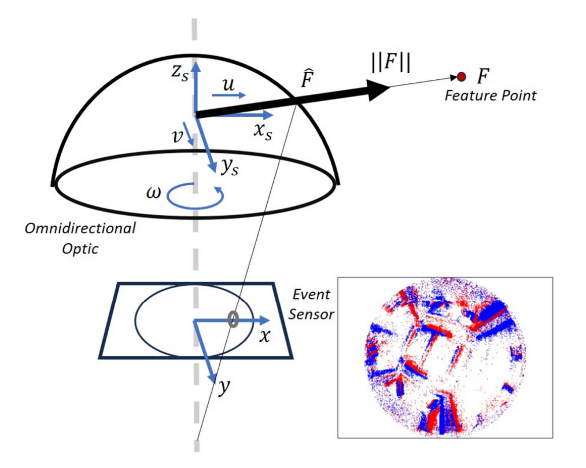
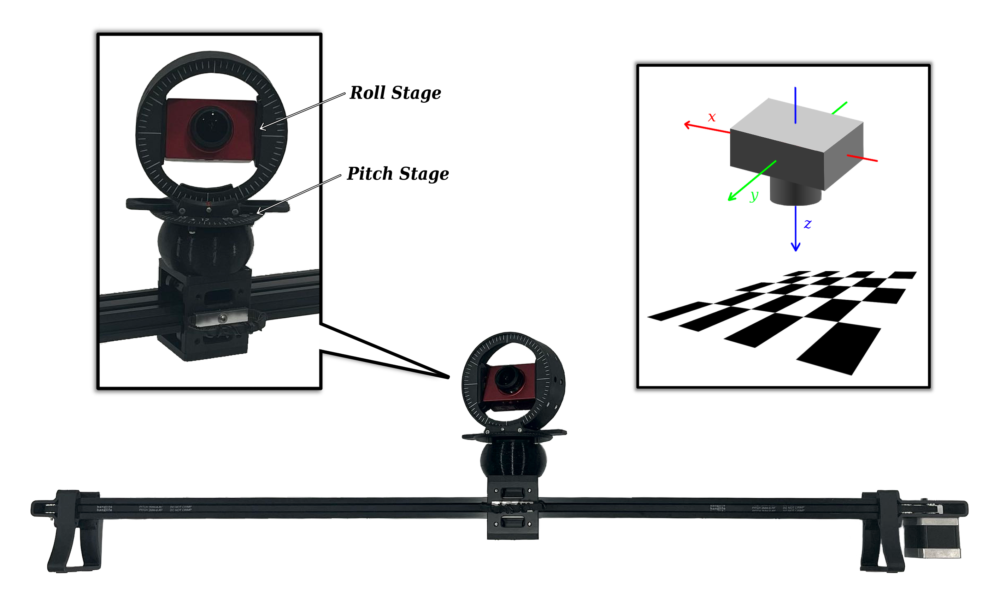
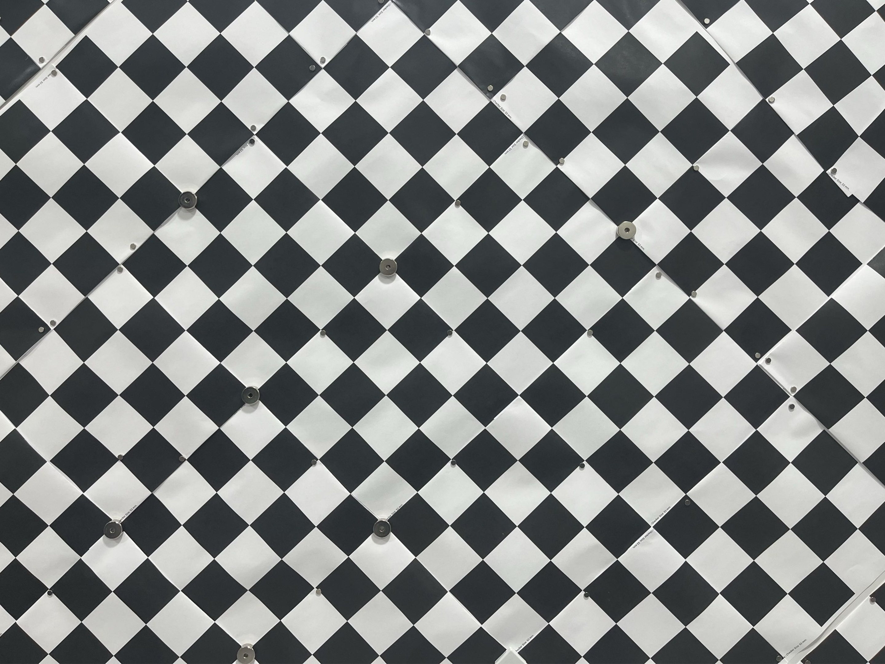
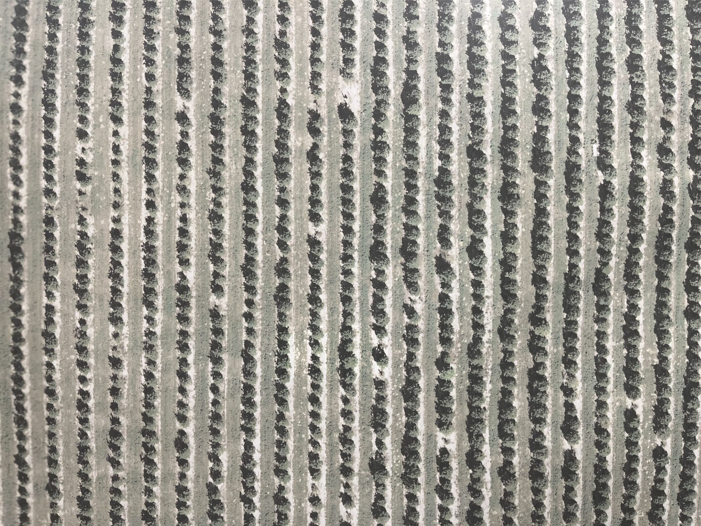
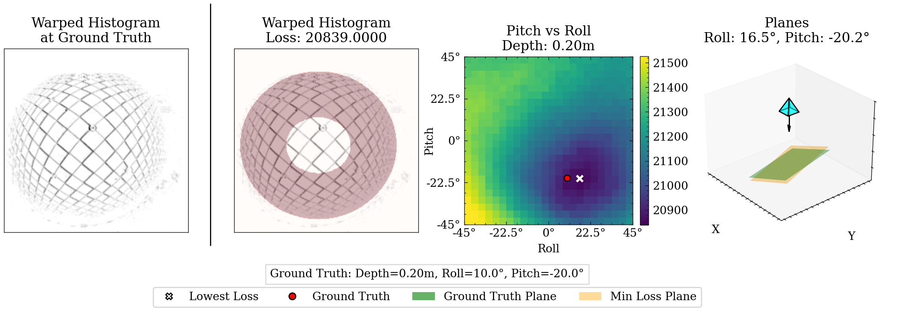
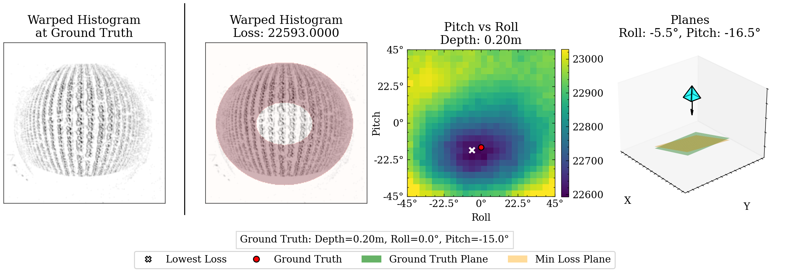

UAV Attitude Estimation from Monocular Omnidirectional Events
Abstract
Attitude estimation seeks to calculate the orientation (i.e., pitch and roll) of an object in motion. Determining attitude is crucial for flight, but conventional sensing techniques rely on gyroscopes, accelerometers, and magnetometers whose measurements are prone to drift and require an initial reference orientation. We propose a novel attitude estimation method for drift correction and reference orientation obtention by combining two inspirations from biology: wide-field optics and event sensors. We focus on planar motion with 3 degrees of freedom, and we introduce a simple algorithm that estimates the pitch and roll from a set of omnidirectional events, velocity, and altitude. We show that selecting an annular region of events along the scene horizon yields better results than naively processing a set of omnidirectional events in its entirety, and evaluate the approach using experiments on captured data, showing robust attitude estimation.
I Introduction
Attitude estimation is a crucial task for unmanned aerial vehicles (UAVs). Vision-based attitude estimation methods seek to determine UAV orientation (i.e., pitch and roll) from one or more cameras and are particularly useful as a complement to conventional sensing techniques, which rely on drift-prone gyroscopes, accelerometers, and magnetometers. Correcting the attitude errors induced by this drift can lead to decreased errors for downstream tasks such as position determination and path planning.
UAVs typically already contain one or more cameras as part of their payload for use in path planning, data collection, surveillance, etc. Increasingly, event cameras are included in UAV payloads due to their superior power efficiency, reduced data bandwidth, and low latency when compared to conventional cameras. These qualities are crucial for the future of small and low-power robotics, where size and power constraints are severe [9, 8].
We focus here on one such constrained situation: an agent equipped with a single downward facing event camera equipped with hemispherical optics. Our algorithm estimates the relative angle between the agent and the ground (modeled as simple plane) using only the event-set, velocity, and altitude. Wide-field optics are critical in this scenario, as narrow-field optics would fail whenever the camera passes over a textureless region and whenever the camera’s view direction is far from the agent’s translation direction [2, 6]. Hemispherical optics reduce these failures by aggregating motion from all directions, and by always measuring some viewing rays that are close to the direction of translation.
As depicted in Figure 1, our key observation is that we can drastically reduce the computation required to estimate attitude from hemispherical images by coupling our optics to an event sensor. In particular, we introduce a simple algorithm that estimates pitch and roll from an event-set directly. This is in contrast to prior event-based algorithms which require reference frames from a conventional camera [24] or a base-station camera [21].
Additionally, our use of an event camera provides benefits beyond increased power efficiency and reduced data bandwidth. Event cameras offer incredible speed, easily reaching MHz rates while conventional cameras achieve kHz refresh rates at best. They are also less susceptible to motion blur and more resilient to high dynamic range [9].
In summary, our contributions are:
-
•
an attitude estimation algorithm using only an event-set, velocity, and altitude;
-
•
the evaluation of our algorithm on a macro-scale prototype using off-the-shelf components.

II Related Work
Traditionally, attitude estimation has relied on integrating inertial measurement unit (IMU) data to derive the system’s pitch, roll, and heading. In practice, these IMUs have some amount of bias which induce a significant amount of drift in the resulting integrated measurements. Multiple strategies have been developed to account for this bias, including Kalman filtering [1] and sensor fusion with Global Navigation Satellite Systems (GNSS), as surveyed in [3, 16]. However, these solutions are not always viable for application to UAV systems. UAVs may be in GNSS-denied environments, and Kalman filtering makes assumptions on the system’s linearity and error distribution. One research avenue has been the development of vision-based attitude estimation methods, as surveyed in [19, 12, 4].
Much of this work involves finding the horizon in a scene captured with catadioptric optics. The relative orientation can then be derived by finding the plane that intersects the horizon as projected on the image sphere [17, 13, 7, 14, 15]. Another common strategy is to find vanishing points in a scene based off straight-edged features, then use homography to estimate orientation from those lines. This approach has been demonstrated with wide-field optics [22, 5] as well as narrow-field optics [10, 23]. Other approaches estimate attitude from the amount of ellipse deformation found in stereo catadioptric images [15] or using homography between multiple frames [25].
In contrast, there is a very limited amount of prior work utilizing event sensors. One prior work uses a stationary base-station event camera to estimate the attitude of an UAV fitted with LEDs [21]. Another estimates attitude as a part of a larger motion estimation framework using the eight-point algorithm in conjunction with an additional conventional sensor [24].
As summarized in Table I, prior research utilizes wide-field optics or event cameras, but not both. Our proposed algorithm seeks to fill this gap by harnessing the advantages of wide-field optics and event cameras.
| Camera Type | Related Work | Algorithm | |||
|
|
Horizon Detection | |||
|
Vanishing Points / Lines | ||||
| [15] | Ellipse Deformation | ||||
|
|
Vanishing Points / Lines | |||
| [25] | Homography | ||||
| Event Camera2 |
|
Eight-Point Algorithm | |||
| [21] | LED Tracking | ||||
| 1 Papers [15, 14] utilize stereo catadioptric cameras | |||||
| 2 Paper [24] utilizes both a neuromorphic image sensor and a conventional image sensor | |||||
Prior work on vision-based attitude estimation tend to fall into several broad algorithmic categories. Approaches that use wide angle lenses or catadioptric systems tend to focus on detecting the skyline or horizon of the scene [17, 13, 7, 14], though algorithms that estimate attitude from the vanishing points in the scene [22, 5] or ellipse deformation [15] also exist. Work utilizing conventional image sensors with a typical FOV tend to focus on finding vanishing points in the scene [10, 23] or use homography [25] for their estimation. The few prior works that use event cameras either use the eight-point algorithm as a key part of their algorithm [24] or fix the event camera on the ground, relying on an LED tracking system attached to the UAV [21]. In contrast, our proposed algorithm utilizes both an event camera and a wide FOV.
III Attitude Estimation from Monocular Omnidirectional Events
 |
|
| (a) | |
 |
 |
| (b) | (c) |
As shown in Figure 1, we focus on an omnidirectional monocular event sensor undergoing planar motion. We denote the rotational velocity along the camera axis as (radians per unit time) and the translational velocity along the - and -axis as and , respectively (meters per unit time). Let there be some static features lying along a plane in the scene which have strong local contrast, triggering events upon sensor movement. The output from the sensor over time duration ( and ) is a group of events denoted by —where, for every event, and represent the location on the image sensor, represents the time of occurrence, and represents the polarity. Event polarity is binary and denotes whether the intensity change that triggered an event was positive (increasing intensity) or negative (decreasing intensity). We assume that the change in the depth of a feature from the image sensor is small and negligible over a small time duration . In other words, we assume that the displacement of the sensor with respect to the average depth of the features from the sensor is small over the given time window. The velocity and altitude of the agent is assumed to be obtained from other sensors, such as IMU data, single point-LiDAR, or barometric altimeters.
The goal of our algorithm is to estimate pitch and roll parameters and , where is the rotation in radians about the -axis and is the rotation in radians about the -axis, for a given event window. For a set of candidate attitude parameters, we first back-project each event in event window to its corresponding 3D coordinate along a plane defined by the agent’s depth and candidate attitude parameters. Next we generate a 2D histogram, warping each event from its position at time to the estimated origin location at time and accumulating the number of events at each location. This histogram is dependent on accurate radial depths between the camera center and the 3D coordinates of the scene features and accurate velocities. Accurate attitude parameters lead to converging initial location predictions for each feature, resulting in a sharp histogram. Inaccurate attitude parameters conversely lead to unsharp or distorted histograms, as the initial location predictions for each feature fail to converge. We quantify this sharpness in a loss function that counts the number of high-value bins in a region of interest. This process is repeated for a limited number of candidate attitude parameters, and the candidate with the lowest loss is selected as the final estimation.
In Section III-A, we describe the omnidirectional camera model and calibration. In Section III-B we derive the ordinary differential equations that govern event trajectories on an unit sphere that are induced when the omnidirectional event sensor is undergoing planar motion —i.e., the path which an event generated from a feature takes as a function of time—and provide an efficient implementation of these event trajectories. From here, we can accomplish our goal by finding the set of attitude parameters that results in maximum alignment of the events along a given set of trajectories, as described in Section III-C.
III-A Omnidirectional Model and Calibration
We used the omnidirectional camera model proposed by Scaramuzza et al [18]. The model uses a Taylor approximation for the mapping between image points, , and their corresponding unit-length direction vectors for each captured feature in the scene, . The Taylor coefficients are the calibration parameters to be estimated. The projection model is:
| (1) |
where , is a depth factor, and where is the distance of the pixel from the image center, with related to raw pixel coordinates by:
| (2) |
Here, the affine transformation parameterized by , , and accounts for geometric distortions and the translation parameterized by and accounts for misalignment errors between the camera and omnidirectional optic’s axis.
In summary, we assume that we know the maps and . We performed experimental calibration using frame images from DAVIS346, details of which are explained in Section IV.
III-B Implied Trajectories
Consider an omnidirectional monocular event sensor undergoing a general 6 DOF motion of rotation about an axis and a translation along a axis . Let there be a captured feature point at a depth from the sensor. The rigid motion of the feature relative to our sensor can be described as a rotation about the axis and a translation along the axis . The instantaneous velocity of is
| (3) |
Projecting onto a unit sphere via spherical perspective projection simply yields the previously defined direction vector:
| (4) |
We derive the motion field equation by taking the derivative of the projection function in Equation 4, with respect to time and substituting in Equation 3. We obtain the following motion field equation [11]:
| (5) |
Using Equation 5, we can find the system of differential equations which govern the event trajectory of a feature point on a unit sphere, when the omnidirectional monocular event sensor is undergoing planar motion with rotational velocity of (radian per unit time) and translational velocity of (radian per unit time). For planar motion, and . Unlike [11], we assume all features lie on a plane parameterized by , , and , where is the normal distance between the camera’s optical axis and the plane, is the relative rotation around the -axis (roll), and is the relative rotation around the -axis (pitch). We now constraint to represent the distance between a captured feature and the plane . For a small time duration we use the following transformation:
| (6) |
We denote the transformation in Equation 6 as , which transforms an event intersecting a unit sphere at to for a given attitude estimation for parameters such that
| (7) |
III-C Quantifying Alignment
Consider a group of events triggered in time interval collected from an omnidirectional monocular event camera undergoing planar motion. Assume velocities and normal depth are obtained from additional sensors. For each candidate set of attitude parameters , we first apply the calibration matrix C as discussed in Section III-A, transforming pixel locations to unit-length direction vectors . The radial depths for each event are calculated from , , and . This is done by first generating the plane equation then finding the line-plane intersection of each direction vector with the plane. From here, transformation is applied as described by Equation 6, obtaining the estimated origin locations at time for each event. Finally, we apply the inverse calibration matrix to project the scene locations back to the image plane, as denoted by . This complete transformation is represented as warp :
| (8) |
From these warped pixel locations, we construct a 2D histogram using kernel density estimation (KDE). The kernel is the Gaussian kernel, and the bandwidth is selected based on the Improved Sheather Jones (ISJ) algorithm [20]. The 2D histogram is defined as the following:
| (9) |
The closer the candidate attitude parameters are to the true attitude, the more the warped initial feature locations converge, leading to a sharp histogram with high-value bins. As the candidate attitude parameters stray from the ground truth values, the warped locations diverge from one another, leading to an unsharp or distorted histogram with low-value bins. An ideal loss function would be minimized as the histogram sharpens and collates into high-value bins, and a naive solution would be to take the variance of the histogram. However, this does not account for the wide-field optics resulting in a variation in the solid angle for each pixel. In practice, this means that the central portion of the camera’s field of view is overrepresented in the histogram while the periphery is underrepresented. To overcome this, we construct a loss that compares the bin values in a peripheral ring to the overall bin values of the histogram:
| (10) |
where is the peripheral ring of the histogram and is the third quantile of the 2D histogram.
The peripheral ring mask is generated by first projecting the original event window onto the - and -axes, finding the regions above a threshold of along each axis’ projection, then finding the largest connected region to eliminate outliers. These connected regions form a box to inscribe the mask ellipse into. The ring thickness is a hyperparameter chosen from two calibration test cases. Our algorithm in its totality is described in short in Algorithm 1.
IV Experiments
The omnidirectional event camera consisted of a fisheye lens with a 4.7mm image circle from Commonlands LLC mounted on a iniVation DAVIS346 DVS event camera. The camera was calibrated as explained in Section III-A from captured checkerboard calibration data captured with the camera’s integrated conventional grayscale image sensor. This was then placed on a custom built linear stage with 3D printed brackets to control the camera angle in relation to the target scene. Two different scenes were used: a checkerboard and satellite imagery of an agricultural field. Photos of the prototype as well as the scenes used are shown in Figure 2.
For the first set of experiments, the camera was placed 0.1m and 0.2m away from the target plane. The camera’s pitch and roll were sequentially positioned at and ; and the camera was moved along the linear stage at mm/s and mm/s along the camera’s axis. By performing this experiment for the two different scenes, we collected 32 sets of data. Our algorithm was performed on each set of data and the estimated attitude compared to the ground truth measurements.


The procedure for the second set of experiments was similar, with the camera distances, velocities, and target scenes remaining the same. The pitch and roll were sequentially set at and , resulting in 23 collected sets of data. After estimated the attitude for each set of data, the result was instead compared to the pitch and roll as estimated from IMU data collected from the camera’s internal IMU.
Example outputs for both experiment sets are shown in Figure 3. As shown in Table II, our algorithm estimated attitude regularly within accuracy. The IMU comparisons in Table III performed similarly, though the roll estimations exhibited a larger discrepancy. This is due to our experimental setup having motion only along one direction, which resulted in an ambiguous IMU-based roll estimation. In these cases, our algorithm outperforms the IMU-based estimation, as it does not have this ambiguity with one directional motion.
| MAE | (%) | (%) | (%) | (%) |
| Experiment Set 1 | ||||
| Combined | 18.75 | 59.38 | 100 | 100 |
| Pitch | 31.25 | 68.75 | 93.75 | 100 |
| Roll | 6.25 | 65.63 | 93.75 | 100 |
| Experiment Set 2 | ||||
| Combined | 21.74 | 73.91 | 100 | 100 |
| Pitch | 43.48 | 69.57 | 100 | 100 |
| Roll | 47.83 | 69.57 | 95.65 | 95.65 |
The percentage of estimations within the specified degrees of accuracy compared to the ground truth camera attitude. Experiment Set 1 consisted of 32 experiments ranging from to for both pitch and roll . Experiment Set 2 consisted of 23 experiments ranging from to for both pitch and roll . The ”Combined” row is the Mean Absolute Error (MAE) across both pitch and roll. The ”Pitch” and ”Roll” columns are the MAE for each component separate from the other.
| MAE | (%) | (%) | (%) | (%) |
| Experiment Set 2 | ||||
| Combined | 13.04 | 39.13 | 69.57 | 91.30 |
| Pitch | 34.78 | 65.22 | 91.30 | 100 |
| Roll | 8.70 | 30.43 | 65.22 | 78.26 |
The percentage of estimations within the specified degrees of accuracy compared to camera attitude estimated from IMU data. Experiment Set 2 consisted of 23 experiments ranging from to for both pitch and roll . The ”Combined” row is the MAE across both pitch and roll. The ”Pitch” and ”Roll” columns are the MAE for each component separate from the other.
V Future Work
Our methodology could be extended in several ways. Here we outline a few of these avenues for future work:
Optimization via Stochastic Gradient Descent (SGD): Instead of a grid search, the attitude could be estimated through SGD using automatic differentiation to calculate the gradients. The optimization would be initialized from the previous attitude estimation and be bounded by known UAV parameters such as tilt limit. The confidence of the estimated minima is intimately tied to the curvature of the objective function. This curvature can be quantified by the double derivative of the function at every point:
| (11) |
Extension to Similar Tasks: Our methodology could be extended to similar tasks such as visual odometry and depth estimation. If another system in the UAV payload captures or estimates agent orientation, we can instead optimize for depth. If another system captures or estimates depth, we can instead estimate the agent’s velocities. The advantage here would remain the same—estimation directly from an event-set, without the need for reference frames or calculating optical flow.
VI Conclusion
Our algorithm introduces a method of solving for pitch and roll directly from an event-set. This provides an additional data point apart from traditional estimations that rely on drift-prone IMU measurements, while also imparting the inherent benefits of speed and power and bandwidth efficiency gained by using an event camera. We demonstrated our algorithm on real data from a hardware prototype, showing close adherence to ground truth measurements and IMU estimations. Additionally, our experiments showed increased robustness over ambiguous IMU-based estimations for cases with one directional motion.
References
- [1] (2002) A new approach to linear filtering and prediction problems. External Links: Link Cited by: §II.
- [2] (1989) Inherent ambiguities in recovering 3-d motion and structure from a noisy flow field. IEEE Transactions on Pattern Analysis and Machine Intelligence 11 (5), pp. 477–489. External Links: Document Cited by: §I.
- [3] (2022-11-01) Efficient attitude estimators: a tutorial and survey. Journal of Signal Processing Systems 94 (11), pp. 1309–1343. External Links: ISSN 1939-8115, Document, Link Cited by: §II.
- [4] (2016) Survey on uav navigation in gps denied environments. In 2016 International Conference on Signal Processing, Communication, Power and Embedded System (SCOPES), Vol. , pp. 198–204. External Links: Document Cited by: §II.
- [5] (2008) UAV attitude estimation by vanishing points in catadioptric images. In 2008 IEEE International Conference on Robotics and Automation, Vol. , pp. 2743–2749. External Links: Document Cited by: TABLE I, §II.
- [6] (2009-10-01) Implementation of wide-field integration of optic flow for autonomous quadrotor navigation. Autonomous Robots 27 (3), pp. 189–198. External Links: ISSN 1573-7527, Document, Link Cited by: §I.
- [7] (2006) Omnidirectional vision on uav for attitude computation. In Proceedings 2006 IEEE International Conference on Robotics and Automation, 2006. ICRA 2006., Vol. , pp. 2842–2847. External Links: Document Cited by: TABLE I, §II.
- [8] (2019) How fast is too fast? the role of perception latency in high-speed sense and avoid. IEEE Robotics and Automation Letters 4 (2), pp. 1884–1891. External Links: Document Cited by: §I.
- [9] (2022) Event-based vision: a survey. IEEE Transactions on Pattern Analysis and Machine Intelligence 44 (1), pp. 154–180. External Links: Document Cited by: §I, §I.
- [10] (2010) Vision-based attitude estimation for indoor navigation using vanishing points and lines. In IEEE/ION Position, Location and Navigation Symposium, Vol. , pp. 310–318. External Links: Document Cited by: TABLE I, §II.
- [11] (1987-06-01) Facts on optic flow. Biological Cybernetics 56 (4), pp. 247–254. External Links: ISSN 1432-0770, Document, Link Cited by: §III-B, §III-B.
- [12] (2018) A survey on vision-based uav navigation. Geo-spatial Information Science 21 (1), pp. 21–32. External Links: Document, Link, https://doi.org/10.1080/10095020.2017.1420509 Cited by: §II.
- [13] (2010) Omnidirectional vision applied to unmanned aerial vehicles (uavs) attitude and heading estimation. Robotics and Autonomous Systems 58 (6), pp. 809–819. Note: Omnidirectional Robot Vision External Links: ISSN 0921-8890, Document, Link Cited by: TABLE I, §II.
- [14] (2011) A bio-inspired stereo vision system for guidance of autonomous aircraft. In Advances in Theory and Applications of Stereo Vision, A. Bhatti (Ed.), External Links: Document, Link Cited by: TABLE I, §II.
- [15] (2013-01-01) Omnidirectional vision for uav: applications to attitude, motion and altitude estimation for day and night conditions. Journal of Intelligent & Robotic Systems 69 (1), pp. 459–473. External Links: ISSN 1573-0409, Document, Link Cited by: TABLE I, §II.
- [16] (2020) GNSS-based attitude determination techniques—a comprehensive literature survey. IEEE Access 8 (), pp. 24873–24886. External Links: Document Cited by: §II.
- [17] (2017) Vision-based sensing of uav attitude and altitude from downward in-flight images. Journal of Vibration and Control 23 (5), pp. 827–841. External Links: Document, Link, https://doi.org/10.1177/1077546315586492 Cited by: TABLE I, §II.
- [18] (2006) A flexible technique for accurate omnidirectional camera calibration and structure from motion. In Fourth IEEE International Conference on Computer Vision Systems (ICVS’06), Vol. , pp. 45–45. External Links: Document Cited by: §III-A.
- [19] (2012-01-01) Vision based uav attitude estimation: progress and insights. Journal of Intelligent & Robotic Systems 65 (1), pp. 295–308. External Links: ISSN 1573-0409, Document, Link Cited by: §II.
- [20] (1991) A reliable data-based bandwidth selection method for kernel density estimation. Journal of the Royal Statistical Society. Series B (Methodological) 53 (3), pp. 683–690. External Links: ISSN 00359246, Link Cited by: §III-C.
- [21] (2022) A spatial localization and attitude estimation system for unmanned aerial vehicles using a single dynamic vision sensor. IEEE Sensors Journal 22 (15), pp. 15497–15507. External Links: Document Cited by: §I, TABLE I, §II.
- [22] (2011-06-01) EKF based attitude estimation and stabilization of a quadrotor uav using vanishing points in catadioptric images. Journal of Intelligent & Robotic Systems 62 (3), pp. 587–607. External Links: ISSN 1573-0409, Document, Link Cited by: TABLE I, §II.
- [23] (2021) An attitude estimation method based on monocular vision and inertial sensor fusion for indoor navigation. IEEE Sensors Journal 21 (23), pp. 27051–27061. External Links: Document Cited by: TABLE I, §II.
- [24] (2023) FlyTracker: motion tracking and obstacle detection for drones using event cameras. In IEEE INFOCOM 2023 - IEEE Conference on Computer Communications, Vol. , pp. 1–10. External Links: Document Cited by: §I, TABLE I, §II.
- [25] (2016-03-01) Vision-aided estimation of attitude, velocity, and inertial measurement bias for uav stabilization. Journal of Intelligent & Robotic Systems 81 (3), pp. 531–549. External Links: ISSN 1573-0409, Document, Link Cited by: TABLE I, §II.